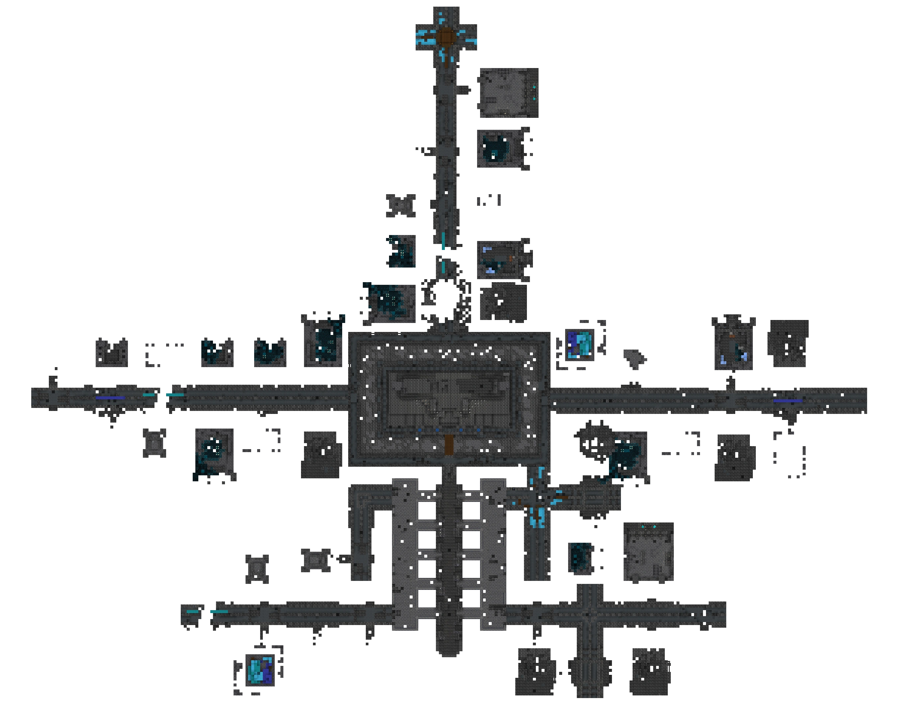

Ciudad antigua
Una ciudad antigua es una estructura palacial que se encuentra en los biomas de oscuridad profunda en la capa -51, que alberga cofres que contienen algunos objetos que no se pueden encontrar en ningún otro lugar.
Una ciudad antigua presenta un palacio muy grande que se extiende a lo largo de la oscuridad profunda. El palacio está formado por largos pasillos con algunas alfombras hechas de lana azul, azul claro y cian o suelos de alfombras para evitar vibraciones, así como algunas ruinas más pequeñas a un lado de los pasillos principales, que contienen uno o dos cofres con botín, estos pasillos también envuelven o interconectan una buena variedad de estructuras distintas. La ciudad tiene estatuas y el centro presenta un marco que se asemeja a la cabeza de un warden, donde hay bloques de pizarra profunda reforzada, que es un material que no se puede obtener en el modo Supervivencia. El marco reposa sobre una inmensa base monolítica. Otros bloques únicos, como faroles y velas de almas que iluminan un poco el lugar, así como diferentes formas de pizarra profunda y de sculk se pueden encontrar aquí. La ciudad tiene una probabilidad de generarse de un 100% en un radio de 2000 bloques alrededor del spawn del mundo.
Iluminación automática
El centro de la ciudad dispone de un sistema de alumbrado automático único en su tipo, que reacciona a las vibraciones del jugador para encender una lámpara de redstone. Las lámparas tienen un sensor de sculk inundando, los cuáles al sentir una vibración, encenderán las lámparas por unos segundos.
Circuitos de redstone
Debajo del marco en el centro de la ciudad se encuentra una serie de sótanos ocultos con circuitos de redstone que se generan de forma natural. La entrada secreta se encuentra en la base de la estructura, debajo del puente de madera entre el centro de la ciudad y la muralla. Hay una puerta de pistón controlada por un sensor de sculk en los circuitos de redstone del sótano.
- city_center_1 hay un bloque de pizarra profunda cincelado frente al marco. Hacer una vibración a su alrededor puede activar el sensor de sculk y luego abrir la puerta del pistón. También hay un extensor de pulso entre el sensor de sculk y la puerta del pistón, que hace que la puerta del pistón se cierre 180 ticks de juego después de que se desactiva el sensor de sculk.
- El circuito de city_center_2: es similar al anterior, pero con un filtro de intensidad de señal. Solo las vibraciones con una frecuencia igual a 8 (interacciones con una criatura, impactos de proyectiles, comer, daño de entidades) pueden activar la puerta del pistón. La creación de estas vibraciones en el camino en el frente del marco en el centro de la ciudad activa la puerta.
- Para city_center_3: hacer una vibración en el camino frente al marco en el centro de la ciudad puede activar el sensor de sculk. Además, hay un biestable en T entre el sensor de sculk y la puerta del pistón. Después de que se activa el sensor de sculk, la puerta del pistón permanece abierta hasta que se activa nuevamente el sensor de sculk.